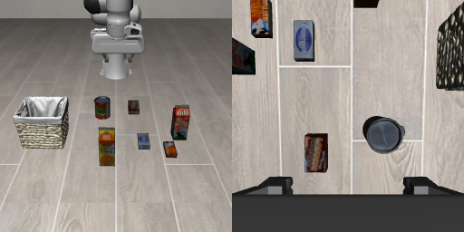
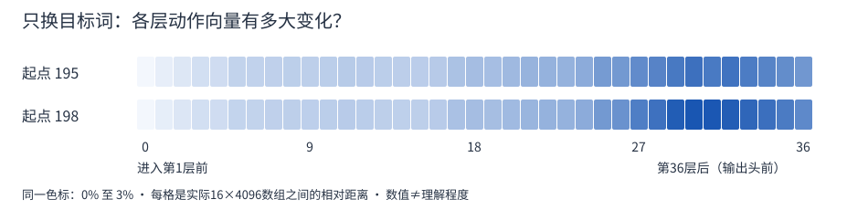
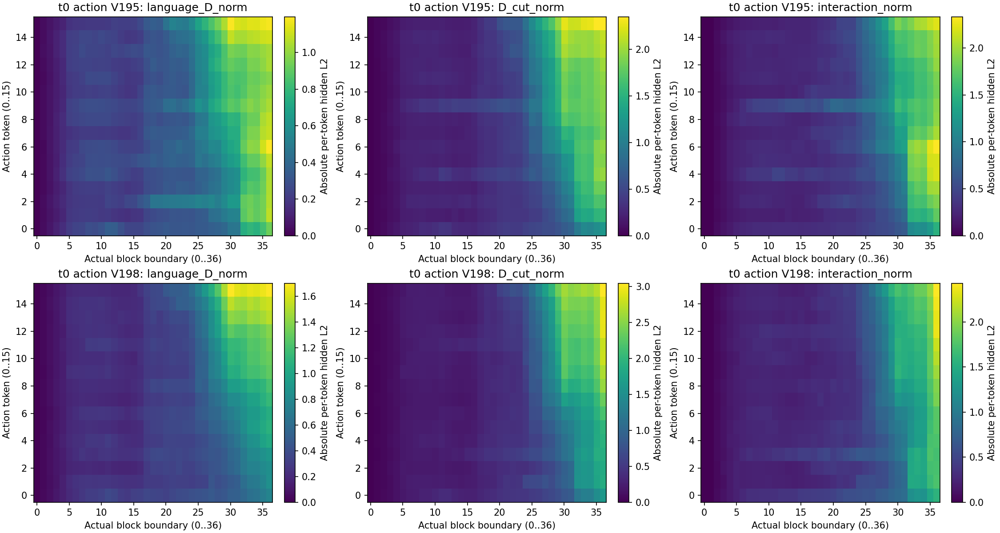

2026-10-04 · 最新实验：3种指令 × 3种网络条件 × 2份随机起点，18条实际执行
有了新线索，但还没找到抓错的根因。
这轮进展，是发现之前的“修复”不够成立。前9层的一项内部改动曾让它抓回牛奶；这次改说“抓cheese”，它却也抓牛奶。只看到抓对一次，不能算恢复了按指令选目标。
当前是12厘米临界初态、两份配对的未来生成噪声。15／18厘米的失败仍未修好；没有发现“牛奶脑区”，也没证明它背了某条动作。
1. 这次真的改了网络里面什么？
照片、机器人初态、动作初始噪声都固定。只换目标词，并对照原生网络、连接全保留、前9层切边三种条件。
200行→前9层：切掉这条读取→当前视觉状态
50行→后续网络与动作输出
文字通路保留；动作直接读取未来状态的通路也保留。切边只作用于首轮动作预测的前15次去噪，之后撤去切边；共同接口底座保留到第30次结束。首个16步动作块执行后，重新拍照，后续7轮正常推理。这是内部因果干预，不是换了一张图片。
看真实输入与准确设置

实际指令模板：pick up the [milk / cheese / cream cheese] and place it in the basket。milk与cheese的完整文字输入均121个词元，只有第48位改变：14074 → 17163。cream cheese是122个词元，属于长度不同的次对照，没有补齐或偷改padding。
两份未来视觉初始噪声来自种子195／198；动作与运行时种子固定195。全连接与切边共享当前50行＋动作16行的同形接口底座，全部36层、30次去噪都保留；切边只在去噪0～14、零编号层0～8禁止当前query读取未来200个key。其他视觉行和文字返回保留原生输出；动作16行使用共同全连接输出，读取未来状态的连接不切断。硬mask也会重新分配剩余注意力权重，不能只解释成移除了某种内容。
2. 改语言后，实际抓谁？
| 指令里的目标 | 原生／195 | 切边／195 | 原生／198 | 切边／198 |
|---|---|---|---|---|
| milk（牛奶） | 奶酪盒 | 牛奶 | 牛奶 | 牛奶 |
| cheese（奶酪） | 奶酪盒 | 牛奶 | 牛奶 | 牛奶 |
| cream cheese（奶油奶酪） 多1个词元，次对照 | 奶酪盒 | 奶酪盒 | 奶酪盒 | 奶酪盒 |
连接全保留对照的抓取对象与原生一致。两组里，切边后的“milk”和“cheese”都抓牛奶；“cream cheese”都抓奶酪盒。这说明此前抓回牛奶的效果，不能单独证明修好了语言选择。
“抓起”要求两侧指垫接触、抬高超过2厘米、连续5条状态记录。这不等于完成放篮任务。所有18条件都执行了，没有挑最好的一条。
展开全部18条结果与接触／抬升判据
| 目标词 | 起点 | 网络条件 | 实际抓起 | 首个合格5帧窗口 |
|---|---|---|---|---|
| milk（牛奶） | 195 | 原生网络 | 奶酪盒 | 68–72 |
| milk（牛奶） | 198 | 原生网络 | 牛奶 | 64–68 |
| cheese（奶酪） | 195 | 原生网络 | 奶酪盒 | 70–74 |
| cheese（奶酪） | 198 | 原生网络 | 牛奶 | 64–68 |
| cream cheese（奶油奶酪） | 195 | 原生网络 | 奶酪盒 | 70–74 |
| cream cheese（奶油奶酪） | 198 | 原生网络 | 奶酪盒 | 67–71 |
| milk（牛奶） | 195 | 连接全保留对照 | 奶酪盒 | 70–74 |
| milk（牛奶） | 198 | 连接全保留对照 | 牛奶 | 64–68 |
| cheese（奶酪） | 195 | 连接全保留对照 | 奶酪盒 | 70–74 |
| cheese（奶酪） | 198 | 连接全保留对照 | 牛奶 | 64–68 |
| cream cheese（奶油奶酪） | 195 | 连接全保留对照 | 奶酪盒 | 70–74 |
| cream cheese（奶油奶酪） | 198 | 连接全保留对照 | 奶酪盒 | 67–71 |
| milk（牛奶） | 195 | 前9层切边 | 牛奶 | 61–65 |
| milk（牛奶） | 198 | 前9层切边 | 牛奶 | 64–68 |
| cheese（奶酪） | 195 | 前9层切边 | 牛奶 | 64–68 |
| cheese（奶酪） | 198 | 前9层切边 | 牛奶 | 67–71 |
| cream cheese（奶油奶酪） | 195 | 前9层切边 | 奶酪盒 | 70–74 |
| cream cheese（奶油奶酪） | 198 | 前9层切边 | 奶酪盒 | 71–75 |
例如64–68表示这5条记录都合格，64是窗口开始，不是第五帧确认时刻。全部实际结果与对象指标
3. 内部查到哪一步了？
这次没有只看热图。我们记录了真实attention输出、输出投影、残差相加、MLP更新、36层动作状态、最后归一化及动作速度，再核对144份实际执行预测记录和2304条控制命令。
具体猜想是：九层改动可能主要给动作加了类似的偏移，抓回牛奶不一定来自重新按语言选目标。于是分别测它对“milk”和“cheese”的内部改变量，看两者是否几乎相同。

真实数组、统计标准和输出头检查
每格相对差＝100 × ‖h_milk − h_cheese‖ / ((‖h_milk‖ + ‖h_cheese‖)/2)，使用同一层边界的全部16×4096动作状态。第36层后为1.7914%／2.0557%；不同层的分母不同，不能解释为信息保留率。
主检验固定在首轮、首个去噪、第36层后、最终归一化之前。令δ_m与δ_c分别为切边减全连接对照的两份改变量；D为全连接下换词的差，E为原生与同形全连接的最大差。要求D>10E后，再检验cos(δ_m,δ_c)≥0.95且‖δ_m−δ_c‖/(‖δ_m‖+‖δ_c‖)≤0.10。两起点D/E为2.0106／2.4390，均无效；方向余弦0.8946／0.8364，差异比例0.2408／0.2975仅作描述，不改判。
这里E是两种连接实现产生的确定性数值差，不是估计随机噪声或统计显著性。后续去噪和闭环已经包含改变后的输入，不能当成同一输入下的瞬时语言读取。
还读取了实际domain5动作输出头，做4096维到前10个动作输出的实数子空间分解。语言差向量的平方范数在其有效空间占5.43%／9.01%；这不是“95%的语言消失”。有效空间本身只有10维，实际BF16速度仍有非零语言差，实数近似与BF16计算也不逐位相同。

4. 下一步只分清一个问题
“cream cheese”能让它改抓目标，是名称信息，还是长度／排列改变？先用真实合理、切词后长度和目标位置匹配的牛奶名称作对照；不能靠补padding伪装等长。若仍能按名称换目标，再只交换特定层供动作读取的真实文字K/V，检查抓取对象是否跟着换。这项后续实验尚未执行。
现在已有具体内部通路的干预结果，但还没有锁定导致15厘米转抓的具体head、MLP单元或读取步骤。不再把“向量有变化”重复包装成根因。